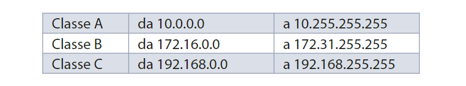

La IANA ha riservato tre blocchi di indirizzi a reti IP private,
ovvero reti IP che non sono connesse a Internet e di conseguenza
neppure alle altre reti pubbliche: quando raggiunge un router
presente su queste reti, il data-gramma non viene instradato
“fuori dalla rete” e perciò neppure inoltrato ad altri router.
Quindi gli host che hanno un indirizzo privato non sono raggiungibili
da altri host oltre a quelli che appar-tengono alla stessa rete privata.
Si distinguono tre blocchi di indirizzi, ciascuno per ogni classe:
- il primo (10.0.0.0) rappresenta un’intera classe A;
- il secondo (172.16.0.0) è costituito dall’insieme di 16 reti di classe B contigue;
- il terzo (192.168.0.0) rappresenta 255 reti di classe C contigue
Indirizzi Privati

NAT
NAT ( Network Address Translation ), per connettere a Internet
una rete con indiri privati occorre effettuare una traslazione di indirizzi da
privati a pubblici chiamata NAT.
Motitvi per qui si utilizzano gli indirizzi Privati
1. maggiore sicurezza : le macchine con indirizzo privato non
sono direttamente raggiungibili da Internet e non possono
quindi essere utilizzate da intrusi come ber-saglio;
2. abbondanza di spazio di indirizzamento : come vedremo, gli indirizzi privati consentono di scegliere libe-ramente la tecnica di attribuzione degli stessi (o statica o dinamica), al contrario degli indirizzi registrati.
2. abbondanza di spazio di indirizzamento : come vedremo, gli indirizzi privati consentono di scegliere libe-ramente la tecnica di attribuzione degli stessi (o statica o dinamica), al contrario degli indirizzi registrati.
 Indietro
Indietro